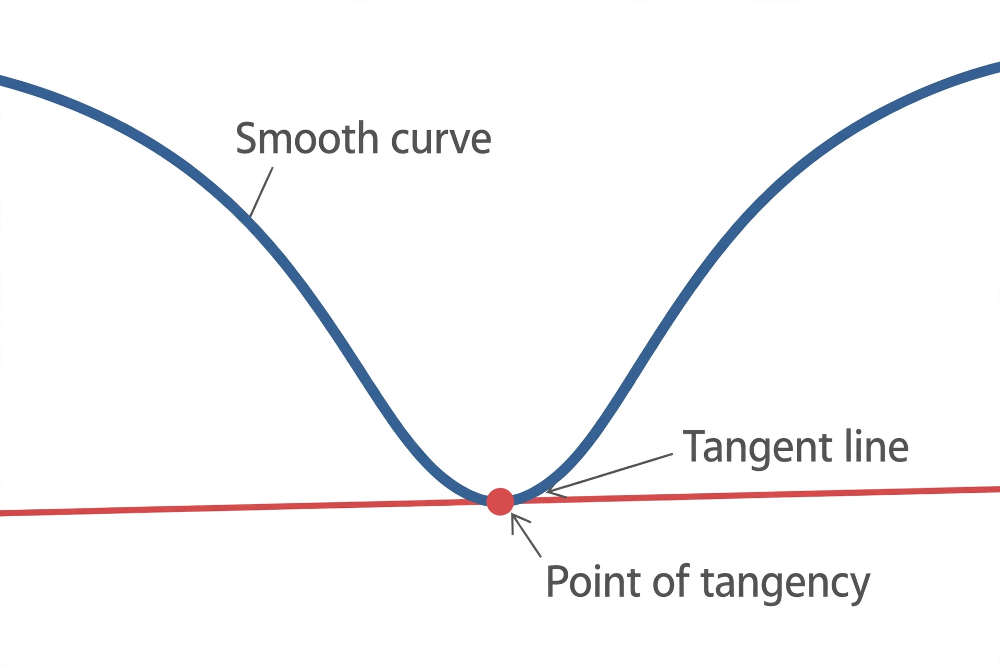

Derivative

[Image: A curve with a tangent line touching it at one marked point]
In mathematics, the derivative of a function measures how sensitively its output changes as its input changes: it is the rate of change of the function at a point, geometrically the slope of the tangent line to its graph there.
Derivatives are defined as a limit of difference quotients and form, with the integral, the core of calculus, developed independently by Isaac Newton and Gottfried Wilhelm Leibniz in the late 17th century — a priority dispute that divided European mathematics for a generation.
Rules and uses
Standard rules — the power, product, quotient and chain rules — reduce most differentiations to routine calculation. Derivatives locate maxima and minima, describe velocity and acceleration in physics, and express marginal quantities in economics.
Functions of several variables have partial derivatives and gradients; the differential equations built from derivatives are the language of most quantitative science.